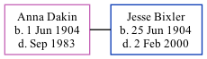

Anna Louella Bixler (née Dakin) 1904 - 1983
[ Home ] | [ Calendar ] | [ Surnames Index ] | [ Family History ]Anna Dakin, the wife of Jesse Clarence Bixler (the fourth cousin twice-removed on the mother's side of Nigel Horne), was born in Fort Wayne, Allen, Indiana, USA on Jun 1, 19041,2,3,4. She married Jesse (a welder with general electric) in Cass, Indiana, USA on Jan 10, 19301.
She died in Fort Wayne in Sep 19832,4.
Citations
- Indiana, Marriages, 1780-1992 - Findmypast
- Social Security Death Index - Findmypast
- United States Marriages - Findmypast
- United States Obituary Notices - Findmypast
Media
United States Marriages - R_327959980/2
United States Obituary Notices - US/TRIB/035595961
Social Security Death Index - USBMD/SSDI/311168590
Family Tree
Generated by Ged2Site. Last updated on Jul 20, 2025